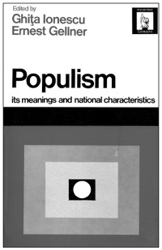
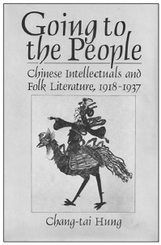
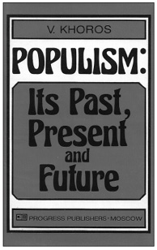
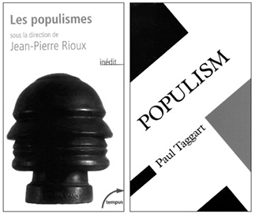
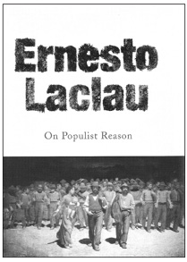
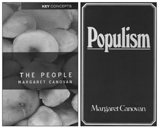
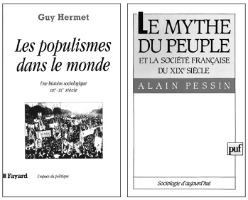
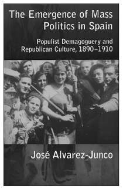
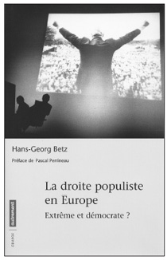

Rus popülizminin ideolojik önderlerinden Peter Lavron, Rusya’da yankı uyandıran Tarihsel Mektuplar (1870) adlı eserinde “sırça köşk”te yaşayan idealist Rus gençliğine sesleniyor; ülkedeki eşitsizliği, adaletsizliği ve yoksulluğu görmezden geldiklerini, halkla seçkinler arasındaki uçurumun her geçen gün daha da derinleştiğini söylüyordu. Bu durum gençler arasında giderek bir tür toplumsal suçluluk duygusuna, derin bir ezikliğe neden oluyordu. Bu duygu ancak gençlerin kendilerini halkın refahı için feda ettikleri takdirde giderilebilecekti. Eziklik duygusundan kurtulmak için “halka doğru gitmeleri” gerekiyordu. Bu hareket Rus popülizminin doğuşunu simgeliyordu. Rus popülizmi, halk anlamına gelen “narod” sözcüğünden türetilen Narodnik ya da Rusçasıyla Narodnichestvo (Наро́дничество) diye bilinegeldi. 19. yüzyılın sonu ile 20. yüzyılın başında popülist düşünce Marksizmle bir ileri aşamaya taşınırken dış dünyaya açılan gecikmiş birçok ülke aydını Çarlık Rusyası’nda “halka doğru gidenler”i örnek aldı.
Günümüzde popülizm diye bilinen, birçok türü olan bu düşünce-eylem anlayışı, Asya kıtasının doğusunda ve batısında iki büyük ülkede, iki imparatorlukta yankılanmakta gecikmedi. Bu iki ülke Çin ve Osmanlı imparatorluklarıydı. Sun Yat Sen’le birlikte Çin’de “halka doğru” gidenler Mao öncesi halkın değerlerine sahip çıkıyorlardı. Seçkinlere özgü “üst kültür” ile Konfüçyüsçülüğe sırt çeviren Çin gençleri çözümü halkta buldular. Hareket noktaları folklordu; özellikle köylü şarkılarını, çocuk hikâyelerini ve atasözlerini toplayarak yola çıktılar. Yerel kültüre, köylü kitlelere ve kırsal sorunlara odaklanan Çin gençleri ileriki yıllarda Çin komünist devrimcilerinin nüvesini oluşturacaklardı.
Çin popülizmini iktidara taşıyan Mao Zedong’du. Çin popülizmi gelenekten köklü bir biçimde kopuşu simgeliyordu. Yıllar önce Liu Fu, Zhou Zuoren ve Gu Jiegang gibi “Dört Mayıs” entelektüelleri diye bilinen bir kesim “halka doğru” gitmişti. Çin’de özellikle 1918’den itibaren halk edebiyatının Beijing Ulusal Üniversitesi’nde önemsenmesi, Çin entelektüellerinin edebiyata ve halk kitlelerine yönelmelerine neden olmuştu.1 Benzer bir süreç Osmanlı Türkiyesi için de geçerliydi. Tıpkı “Dört Mayıs” entelektüelleri gibi Osmanlı topraklarında 1908 Devrimi ertesi Ziya Gökalp, Ali Canib, Ömer Seyfeddin, Köprülüzade Mehmed Fuad, Rıza Tevfik vb. “On Temmuz” entelektüelleri uluslaşma sürecinde halkı, “halkiyyat”ı, folkloru keşfetmişler; “halka doğru” gitmişlerdi.
20. yüzyılın özellikle ikinci yarısında bağımsızlığını kazanmış birçok ülkenin aydın kesitinde görülen Narodnik geleneğinin ilk örneklerinden biri Osmanlı popülizmi ya da “halkçılık” oldu. İkinci Meşrutiyet popülizmi “halka doğru giderek” kültür, dil ve folklor alanında kök saldı.2 Halka Doğru dergisinde Ziya Gökalp “halkiyyat”ı ele aldı. Türk Ocağı tarafından yayımlanan Türk Yurdu dergisinde Türklerin Orta Asya ve Anadolu’daki etnografya malzemeleri hakkında çeşitli makaleler yayımlandı.3 Keza Yeni Mecmua bu birikimi daha da pekiştirdi. Halkevleri’nde, Ülkü mecmuası başta olmak üzere Halkevi dergilerinde doruk noktasına varacak olan popülizmin siyasal boyutu Milli Mücadele’de ulus-devletin gündemini oluşturdu. “Halka doğru giden” Jön Türkler’in Halk Fırkası’nı kurmaları doğaldı.
19. yüzyılın ikinci yarısında köylü toplumu olan Rusya’da Batı hayranlığını sorgulayan aydın zümre “halka doğru” gitmişti.4Bu bir anlamda Büyük Petro ile başlayan modernleşme sürecine karşı çıkan, geçmişin Rusya’sının “eşitlikçi” evresine özlem duyan bir hareketti.5 Böylece çağdaş anlamda popülizmin temelleri atılmış oluyordu. Rus popülizmi üzerine en kapsamlı çalışmayı 1952 yılında Il Populismo Russo başlığıyla İtalya’da Franco Venturi ortaya koydu.6 Yazarın 1947-1950 yıllarında Moskova’da yazdığı bu klasik eser 1848-1881 arası Rusya’da nihilistlerden, Lenin ile Bakunin’in erken dönemlerine ve Rusların gizli derneklerine popülizmin doğuş öyküsünü içeriyordu. Herzen’le kristalleşen popülist ideoloji, Bakunin, Çernişevksi ve diğer entelektüellerin çabalarıyla olgunlaşıyor, Rusya’nın kırsal derinliklerinden süzülerek Rus entelektüelinin iktidar tutkularını dile getiriyordu. Kitabın varış noktası 1 Mart 1881. II. Aleksandr’ın Narodnaya Volya yürütme komitesince düzenlenen bir suikast sonucu katledilişiydi. Isaiah Berlin yazdığı girişte kitabı kendi konusunda tüm zamanların en yetkin kaynağı olarak tanıttı. 1959’da İtalyanca yayımlanan kitap 1960’ta İngilizceye, 1972’de Fransızcaya kazandırıldı.7
20. yüzyılın ortalarında yayımlanan Il Populismo Russo popülizm yazınının dönüm noktasını oluşturdu. Bundan böyle siyaset bilimi literatüründe popülizm enikonu tartışılır oldu. Bu bağlamda London School of Economics’te 19-21 Mayıs 1967’de ilk kez popülizm üzerine bir konferans düzenlendi. Toplantının ardından yayımlanan Populism: Its meanings and national characteristics adlı eser küresel ölçekte popülist gelişmeleri kapsayan ilk kitap oldu.8 Onu Sovyetler Birliği’nde 1980 yılında Vladimir Georgievich Khoros’un Rusça Popülizm: Geçmişi, Bugünü ve Geleceği adlı kitabı izledi. Kitap 1894 yılında Progress Publishers tarafından İngilizceye çevrildi.9

Popülizmin değişik türlerini kapsamlı bir biçimde tek çatı altında ele alan Margaret Canovan oldu.10 Rus entelektüellerinin Narodnichestvo’suyla 1890’ların Amerikan Halk Partisi’nin son kertede benzerliklerini vurgulayan Canovan kırsal popülizmden popülist diktatörlüklere, teori ve pratikte popülist demokrasiden gerici türlerine geniş bir perspektif çizdi. Ardından Gavin Kitching’in popülizm, ulusçuluk ve sanayileşme sorunsallarını ele aldığı Development and Underdevelopment in Historical Perspective: Populism, nationalism and industrialization adlı kitap yayımlandı.11 Giderek genişleyen popülizm literatürüne12 Türkiye uzun süre duyarsız kaldı. Oysa 20. yüzyılda bu düşünce yapısının ilk örneklerinden biri Osmanlı topraklarında yeşermişti. Popülizmin Türkçe karşılığı “halkçılık” Meşrutiyet yıllarında geniş bir kesimde yankı uyandırmış, Cihan Harbi yıllarında Ziya Gökalp’in öncülüğünde solidarizmle harmanlanarak devletin izlediği resmi ideolojiye dönüşmüştü. Halk Fırkası işte bu popülist düşüncenin ürünüydü.
Popülizm ve İdeoloji
Popülizmin bir ideoloji olup olmadığı uzun yıllar tartışılageldi. Bunun temel nedeni içeriğinin son derece karmaşık oluşuydu. Modernizasyonla karşılaşan gerice köylü toplumlarında bir tür sosyalizm olduğunu savunanlar oldu. Sanayi ve finans sermayesinin tehdidi altında küçük köylülüğün ideolojisi şeklinde tanımlandı. Geleneksel değerleri ön plana çıkaran bir kırsal hareket olduğu söylendi. Halkın iradesinin her şeyin üstünde tutuluşu dendi. Çoğunluğun görüşlerinin elitist bir azınlıkça denetlenişi ya da faziletin toplumun çoğunluğunu oluşturan basit insanlarda ve onların ortak geleneklerinde aranışı olarak yorumlayanlar oldu. Özerk örgütsel güçleri olmaksızın kentsel işçi sınıfının ve/veya köylülüğün desteğini alan siyasal hareket bir başka tanımdı.
20. yüzyıl ideolojiler çağıydı. Kuşkusuz tüm “izm” ile biten fikir hareketlerinin ideolojiyle bir kan bağı vardı. Ancak revaç bulan ideolojiler farklı yazgıları paylaştılar. Kimi zaman derin birikim ürünü, kapsamlı ve mantıksal bir doktrin, kuramcılarıyla birlikte gündemden silinip gitti; geride birkaç mürit bıraktı. Ancak 20. yüzyılın ilk yarısında bir dizi ideoloji, güçlü duygusal birikimle donatılmış ve tabanın çıkarlarını gözeten basit bir kavram olmaktan çıkıp kitleleri peşinden sürüklemiş ve maddi bir güce sahip olmuştu. Bu durum özellikle iki dünya savaşı arası gözlenmişti. İdeolojiler birçok ülkede kalıcı yankı uyandırabilmişti; ancak farklı toplumsal çevre, ideolojileri derin dönüşümlere uğratmış, özgün biçiminden –tabii varsa– sıyrılıp, yöresel özelliklere bürümüştü. Marx’ın kuramıyla Sovyet Marksizmi, ardından Çin Marksizmi, daha da ötelere gidilirse Afrika ve Güney Amerika’da Marksist pratikler bu dönüşümün somut örnekleriydi.
Marksizm güçlü bir ideolojiydi ve zamanla tüm dünyayı kuşatmış, evrensel bir boyut kazanmıştı. Farklı uygulanış biçimlerine karşın Marksizmin sağlam bir omurgası vardı. Popülizm bu bağlamda Marksizmle boy ölçüşemezdi. Popülizm bu tür dört başı mamur bir ideoloji değildi. Marx, Engels gibi kurucu düşünürleri yoktu. Çok daha muğlaktı; gevşekti. Sağa kaykılanı da vardı, sola yöneleni de.13 Popülist seçenekler neredeyse sınırsızdı. Popülizmi ideoloji yapan çoğu kez ortak nesnel sorunların, benzeşmelerin ürünü, görünürde bağımsız, birbiriyle ilişkisiz, tarih ve coğrafyasıyla farklı, ama yine de ortak içeriğe sahip deneyimlerin sonucu olmasıydı. Amerikan popülizmi, Rus popülizmi, Latin Amerika popülizmi, Afrika popülizmi, Çin popülizmi, Türk popülizmi gibi başına bir ülke konan seçenekleri ilanihaye çoğaltmak mümkündü.14
Sömürgelerin ya da bağımlı “çevre” ülkelerinin 20. yüzyılla birlikte, daha doğrusu Cihan Harbi ertesi, dünya tarihinin bir parçası olması, ideolojik yelpazeyi büyük ölçüde genişletmişti. Latin Amerika’da gecikmişlik kaygısı, Asya, Afrika ulusal kurtuluş hareketleri bu çeşniye renk katan gelişmelerdi. 20. yüzyıl insanı, özellikle İkinci Dünya Savaşı ertesi Soğuk Savaş’la birlikte ideolojiler doğrultusunda saflara ayrıldı. Bu evrede popülizm özellikle gelişmiş Batı’nın dışında kalan ülkelerde karmaşık bir nitelik taşıyan bir ideoloji yumağına dönüştü. İkinci Dünya Savaşı ertesi sosyal bilimlerin gelişmiş Batı ülkeleri dışına yönelişiyle popülizm gündeme oturmakta gecikmedi. Önceleri antropolojinin uğraş alanı “öteki” ülkeler bu kez siyaset bilimince kapsanır oldu. Amaç Batı’dan farklı, değişik yapılanmaları aydınlatmak, sınıflandırmanın ötesinde doğuş gerekçelerini ortaya koymaktı.


Bu yönelimi tetikleyen temel neden Batı’da ideolojik yapılanmalarda gözlenen çelişik konumların geciken ülkelerde bir arada bulunması, uzlaşmasıydı. Popülizmle birlikte bundan böyle gelenekselcilik-çağdaşçılık, muhafazakârlık-köktencilik, ulusçuluk-toplumculuk gibi Max Weber’in “ideal tipler”indeki bağdaşmaz gözüken özelliklerin birlikteliği sosyal bilimcinin gündemini oluşturacaktı. Asya’da, Afrika’da, Güney Amerika’da beklenmedik birliktelikler ortaya çıkabiliyordu.
20. yüzyılın ikinci yarısından itibaren değişik şekillerde tanımlanan, dünden bugüne gelişen, geri kalmış, geri bırakılmış, Üçüncü Dünya, Güney Yarım Küre, ya da gelişen pazarlar türü tanımlarla bilinen ülkeler üzerine yazında iki ana eğilim gözleniyordu. İlk eğilim bu ülkelerin konumlarının özgünlüğünü, farklılığını, tekilliğini vurguluyordu. Bu süreçte özellikle antropoloji, etnografya gibi alanların özgüllük arayışı başı çekti. Amerika’nın keşfinden beri antropolojinin temel uğraş alanı buydu. Antropoloji özünde geri kalmışlığın, “öteki dünya”nın bilimiydi. Geleneksel kültür ve gelişmiş ülke değerlerinin kavşağında kendilerine özgü yapılanmalar söz konusuydu. Şu veya bu kültürel birikim ışığında geleneksel bilincin çağdaşlaşma özellikleri, ideolojik-siyasal koalisyonlar, kavramsal senkretizm, “çok yapılı” ideolojiler bu eğilimin uğraş alanlarıydı. Yöntemsel açıdan bölgede bilinegelen kategori ve kavramların var olan gerçeklere uyarlanması; genelden tekile kayan, tekilin vurgulandığı bir çözümleme hedefleniyordu. Diğer bir deyişle somut-tarihsel açılım yöntemin ana ekseniydi. Büyük ölçüde antropolojiyle uyum içerisindeydi.
İkinci eğilim genel ağırlıklıydı. Tekil bırakılıyor, genele ağırlık veriliyordu. Dünya tarihinin yasaları ve genellemelerinden yola çıkarak gelişen ülkelerdeki ideolojik süreçler inceleniyordu. Bu aynı zamanda felsefi bir bakış açısıydı. Gerçek, genel kuramsal sorunların işlenmesiyle irdeleniyordu. Yöntem açısından, yeni toplumbilimsel varsayımların ve kurguların yaratılmasında var olan fikirlerin dönüşümü ve senteziyle sonuçlanıyordu. Kuramsal-toplumbilimsel eksen bu eğilimin ana yönelimiydi. Ulusçuluk çözümlemelerinde çoğu kez bu tür bir yöntem izleniyordu.
Aslında her iki yöntem bilgi üretiminde bir diğerini tamamlar nitelikteydi. Çağdaşlaşmanın, modernleşmenin özelliklerine eğilen bilim insanı zaman zaman ana yörüngeden uzaklaşmak, bölgeye ve zamana özgü kavram ve düzenlemeleri gündemine almak zorundaydı. Bu doğrultuda yaklaşım, kavramın yeni mekân ve zamana uygulanmasına, hareket noktasındaki kavramın da zenginleşmesine yol açıyordu. Bilim ne de olsa sarmal bir birikim süreciydi. Yeniliklere açıktı.
Somut-tarihsel görüş son kertede beraberinde karşılaştırmalı tarihsel analizleri getiriyordu. Özellikle gelişme kuramları bu yöntemi sıkça kullanıyordu. Amerikan siyaset bilimcisi Samuel P. Huntington 19. yüzyıl Rusyası aydınlarının çağdaşlaştırma girişimlerini 20. yüzyıl Asya, Afrika ve Latin Amerika’daki benzer gelişmelerin prototipi olarak görüyordu. Crawford B. MacPherson bağımsızlıklarını kazanmış genç ülkelerin ideologlarının Batı’nın liberal, bireyci faydacı görüşlerini reddettiklerini, ancak yine Batı’nın erken dönem demokratik geleneğine, Rousseau ve popülizm geleneğine yöneldiklerini söylüyordu. Ünlü İngiliz yazar Isaiah Berlin ise gelişen ülkelerde uzun bir dönem izlenen sosyalist ekonomik politikaların kaynağının dünün popülist fikirleri olduğunu ileri sürüyordu.15
Farklı zamanlar ve kültürel-tarihsel ortamlar, bu ortamların düşünce dağarcıkları ve tetikledikleri hareketler karşılaştırıldığında bazı “tarihsel analojiler”e, benzerliklere varılabiliyordu. Bu benzerlikler çekici olduğu kadar aldatıcı da oluyordu. Kimi kez analojiler yapay, ipuçları yanlış çıkıyordu, ya da benzerlikler temel farklılıkları örtebiliyordu. Ama yine de yapay benzerliklerin ardında toplumbilimsel bir varsayım, bir siyasal yapı modeli, bir dönüşüm tipolojisine açılım sağlayan derin ve temel bağlantılar ortaya çıkarabilen durumlar oluşabiliyordu. Küresizleşmenin egemen olduğu iki dünya savaşı arası Türkiye’de Tek-Parti popülizmi ile Latin Amerika popülizmlerini karşılaştırmak ve ortaklıkları görmek mümkündü.
Öte yandan zaman zaman historisizm ilkelerine bağlı kalınıyor, somut koşulların ya da tarihsel dönemlerin özellikleri ve farklılıkları göz önünde tutuluyordu. Tarihçi bu kaygıyı sürekli yaşıyordu; “ahistorik” ya da “anti-historik” olma kaygısıyla ya da “dönemlerin farklılığı”nı gerekçe göstererek, geçmişe gömülüyor, kuramsal-toplumbilimsel analiz kapılarını kapatıyordu. Bu nedenle bilim insanı iki arada bir derede çözüm bulmak zorundaydı. Ne körü körüne historisizme saplanmak, ne de dünü dışlayan bir “sosyolojik” anlayışı bellemek gerekiyordu.
Popülizmin Tanımı
Popülizmin ilk yeşerdiği ülke Çarlık Rusyası sayılır. Rus popülizmini dar anlamından koparan ve onu kuramsal bir temele oturtarak bir dizi Asya ülkesine genelleyen Lenin oldu.16 “İki Ütopya” başlıklı yazısında Sun Yat Sen’in Çin’i ile Rus pratiğini karşılaştırıyordu.17Rus Narodnizminin ve onun çağdaş popülist uzantılarının gelişen ülkelerde değişik türleri oluşturmaları popülizmin entelektüel ve kültürel gelenek yelpazesini genişletmişti. Ancak “küçük burjuva” ideolojileri diye nitelenebilecek popülist türlerin 19. yüzyıldaki biçimiyle 20. yüzyıldaki yapıları arasında dünya koşullarından kaynaklanan önemli farklar vardı.
Popülizm teriminin etimolojik kökeni 1870-1890 döneminde ABD’deki “Grangers” ve “Greenbackers” diye bilinen çiftçi hareketine uzanıyordu. 1892’de ABD’de Demokratlar’a ve Cumhuriyetçiler’e karşı Halk Partisi adıyla yeni bir parti kurma çabasında olan aktivistlerin buldukları bir terimdi ve Amerika’da bir üçüncü yol arayışıydı. İsim babası David Overmyer’di.18Ancak o günden sonra popülizm söylemi geniş bir alana yayıldı. Günümüz yazınında belli bir entelektüel bakış açısı ve toplumsal harekete yönelik olarak kullanılan bir tipolojik kategori oldu. Değişik ülkelerde ve farklı tarihsel dönemlerde küçük burjuva katmanların ideolojik ve siyasal tavrını anlamaya yaradı.
Çağdaş siyaset biliminde popülizmin kuramsal içeriği Edward Shils, Peter Worsley, Jean Leca vb birçok yazar tarafından, yukarıda sözünü ettiğimiz London School of Economics and Political Science’da düzenlenen bir tartışmada kapsamlı bir biçimde ele alındı. Ancak popülizme her yazar farklı boyutları vurgulayarak yaklaşmıştı. Angus Stewart gibi bazı düşünürler popülizme tek bir tanım vermenin olanaksızlığından söz ediyorlardı.19Peter Wiles gibi “cesur” bilim insanları ise en geniş tanımı yeğliyorlardı. Wiles’a göre popülizm “fazilet, basit, olağan halkta ve onun ortak, kolektif geleneklerinde yaşar” tarzında özetlenebilecek bir ana öncüle yaslanan bir inanç veya hareketti.20Londra tartışmasında popülizmin değişik tarihsel ve coğrafi koşullarda, ancak özel bir toplumsal durumda sık sık gözlenen bir zihniyet olduğu önerisi kabul görüyordu. Burada özel toplumsal durum çok geniş anlamda kullanılmıştı. Hızlı toplumsal dönüşümün uzlaşmazlığı, yeni ile eski arasındaki çatışma, kentleşme, modernizasyon, kırsal nüfusun yoksulluğu toplumsal durumu belirleyen temel etmenlerdi. Yapılan tanıma göre popülist hareketler, köklü ekonomik, toplumsal, kültürel ve siyasal değişikliğin baskısına, başta var olan siyasal yapıdan yabancılaşmış entelektüeller olmak üzere, başkaldıranların ya da tepki duyanların tüm halkın çıkarları için iktidarı hedefledikleri hareketlerdi. Halktan, özellikle onun faziletin yuvası olarak değerlendirilen arkaik kesiminden kaynaklanan basit ve geleneksel biçim ve değerlere dönme ya da bunları benimseme inancı bu hareketlerin temel niteliğiydi.

Amerikalı sosyolog Edward Shils’in Peter Worsley’le paylaştığı bir başka tanıma göre ise popülizm iki ilkeye yaslanıyordu: Bunlar her türlü siyasal standardın üstünde “halkın iradesi”nin önceliği, liderlerin ara siyasal kurumları aşarak kitleyle doğrudan temasıydı.21Fransız siyaset bilimcisi Jean Leca ise popülizmin kentin, kent cazibesinin ve onun yozlaşmış liderlerinin “kirletmediği” basit insanın faziletlerine körü körüne bağlılık; her türlü iktidara güvensizlik; siyasetçiyi ve resmi kisve taşıyanı, bürokratı küçümseme gibi unsurlardan oluştuğunu savunurdu. Yine Leca’ya göre popülizm genel iradeyle birleşmiş ve egemen olma özlemindeki diğer toplumlarla kavgalı bir toplumun ideolojisiydi.
Öte yandan popülizmin sosyo-siyasal çıkarsamaları açısından da uzlaşma sağlanamıyordu. Popülizme devrimci, dönüşümcü görev yükleme konusunda çekingen davranan yazarlar olduğu gibi, köktenci niteliğini ve sosyalizmle yakın bağını vurgulayanlar da vardı. Batılı yazarlar popülizmin aşamaları ve tarihsel niteliği konusunda da görüş birliğine varamıyorlardı. Ernesto Laclau popülizmin sosyo-tarihsel gelişimin bir aşaması olmadığını, toplumun hâkim ideolojisinin ve iktidar yapısının çöküşüyle, diğer bir deyişle genel olarak bir toplumsal krizle bağlantılı olduğunu savunuyordu.22Gelişen ülkelerdeki siyasal trendleri popülizm başlığı altında toplayan Amerikalı siyaset bilimcisi David E. Apter ise tüm bu gelişmeleri “demokrasi-öncesi” aşama olarak görüyordu.
Latin Amerikalı yazar Gino Germani popülizmi geleneksel toplumdan modern topluma geçiş sürecinde bir “asenkronizm” ürünü ve değişik siyasal güçlerin olur olmaz at oynattığı, halka şirin gözükme yarışına giriştiği bir ortamda, kitlelerin siyasal yaşama hazırlıksız ya da “erken” katılımının sonucu oluşan bir siyaset anlayışı olduğunu savunuyordu.23Arjantinli bilim adamı Torcuato di Tella, Germani ile aynı fikri paylaşarak geleneksel toplumdan sanayi toplumuna geçişin doğurduğu çarpıklıkların ve “asenkronizm”in ürünü olarak değerlendirdiği popülizmi “gösteri etkisi” ve “artan beklentilerin devrimi”nden kaynaklanan durumla açıklıyordu.24Ancak di Tella’nın popülist hareketler için çizdiği ana hatlar epey muğlaktı: Bunlar “anti-statüko”yu savunan kitle hareketlerini ardına alan, duygusal yönü güçlü seçkinci eylemlerdi. Tüm bu yazarların çalışmaları, popülizmin belirleyici özellikleri ile unsurlarının içi karmakarmaşık bir bohçaya benzediği izlenimini veriyordu. Bu bohçada aynı zamanda siyasal davranışta “mistisizm”, anti-Semitizm, fesat korkusu, anti-entelektüalizm, yabancı düşmanlığı (zenefobi) da yer alıyordu.
Popülizm sorunsalının bu denli çeşnili oluşu bilim insanının oluşuma çoğu kez sezgisel ve tanımlayıcı (deskriptif) yaklaşımından kaynaklanıyordu. Tarihsel belirleyicileri, doğuşuna neden olan nesnel sorunlar ve kitlesel sosyo-psikolojik bilince etkisi, diğer bir deyişle ontolojik yönü son derece önemliydi. Ancak “ontolojik” yaklaşım olmaksızın şu veya bu entelektüel ya da siyasal fenomeni popülizm olarak nitelemek ya da böyle bir nitelemenin kıstaslarını belirlemek gelişigüzel bir tavır olurdu. Bu eksiklik nedeniyle popülizm adı altında bugün çok değişik nitelikteki ve “metahistorik” tarihsel olay ve entelektüel akım yelpazesi kapsanır oldu.
Popülizm ve Sınıfsal Sorun
Londra tartışmasından görüldüğü kadarıyla popülizmin tarihsel kökenleri Gracchus kardeşler ve Vergilius’un Bucolica’sına kadar uzanıyordu. İngiliz Burjuva Devrimi’ndeki Levellers ve Diggers’lar, Chartism, Kuzey Amerika popülizmi, Narodnizm, 20. yüzyılın ilk on yıllarında Bulgaristan, Romanya, Çekoslovakya ve diğer Doğu Avrupa ülkelerindeki “köylücülük” (peasantism), İngiliz İşçi Partisi, Kanada’da Saskatchewan eyaletindeki Çiftçi İttifakı, gelişen ülkelerdeki çağdaş ideolojiler, “Yeni Sol-New Left” kimi çevrelerde popülizm kapsamında değerlendirildi. McCarthycilik ve Maoizmi de bu etiket altında yorumlayanlar oldu. Hatta bugün Avrupa’da gözlemlenen aşırı sağ ideolojik yönelimler Batı yazınında popülizm ya da ulusal popülizm başlığı altında yer aldı. Köylü yönelimi, ideolojik kurgularındaki iç çelişkiler, geleneksel mirasa yaslanma, halk içinde sınıf çatışmalarına reddiye popülizme yönelimde bariz göstergeler arasında sayıldı.
Batı’da popülizmin bu denli gevşek anlam taşıması iki nedene bağlanabilirdi. İlki fikir sistemi, bir tür ideolojik gelenek olarak popülizmdi; diğeri sosyo-siyasal hareketin, siyasal kültürün özel bir türü olarak popülizmdi. İlkinde popülizmin ideolojik sistemini oluşturan iç unsurlar, diğerinde hareketin siyasal biçimleri, liderlerle kitleler arasındaki ilişki, karizmatik önderlik gündemi oluşturuyordu. İlkinde Wiles ve Leca’nın, diğerinde Shils ve Worsley’in açılımları ön plana çıkıyordu.

Kuşkusuz her iki boyut da bir ölçüde birbiriyle bağlantılıydı. Ancak bu bağlantı doğrusal nitelik taşımıyordu. Genelinde ideolojik ve siyasal alanlar görece olarak bir diğerinden bağımsızdı. Bu nedenle, şu veya bu popülist yönelim pratikte “doğrudan” demokrasi ve karizmatik önderlik yöntemlerine eğilebilir ya da daha “suskun” siyasal biçimleri benimseyip parlamenter sistem çatısı altında etkin olabilirdi. Buna karşılık, her türlü, halkla “doğrudan” teması savunan karizmatik “önderlik” anlayışı popülizm çatısı altında değerlendirilemezdi. Yoksa Rus Narodnizmiyle, “Afrika sosyalizmi”ni, faşist ve diğer otoriter siyasal hareketlerle aynı çatı altında değerlendirmek gerekirdi.
Nitekim Ernesto Laclau da bu yanılgıya düşüyordu. Değişik popülist yönelimleri fiilen toplumun sınıfsal ayrımı dışında kalan “halk” kavramıyla bağlantılandırıyordu. Bu tavrın nesnel nedeni, sınıf ayrımlarına karşın, toplumun bir dizi popüler geleneğinin, toplumsal ve kültürel mirasının korunuyor olmasıydı. Ve bu gelenek ve miras, değişik sınıf ve siyasal güçlerce farklı amaçlar için kullanılabilirdi. Bu birikim entelektüeller tarafından işlenen ve sınıf ideolojileri unsurlarına dönüştürülen bir tür “ideolojik hammadde”ydi. Çok eski zamanlardan kalmış eşitlikçi motifler ortak bilincin öğelerini oluşturuyor ya da tarımsal ütopyalar benzer bir işlev görüyordu. Bu tür bir anlayış II. Meşrutiyet yıllarında sık sık gözlemlendi. Gökalp Türk feminizminin kökenlerini Orta Asya’da arıyor ya da toprakta Osmanlı “rakabe”sini toplumsal mülkiyet olarak görüyordu.
Ernesto Laclau, nihayet “hâkim sınıf popülizmi” ve “mazlum sınıf popülizmi” diye bir ayrıma gidiyordu. Hâkim sınıf popülizmi toplumsal çelişkilerin törpülenmesine yönelikti: Popüler sloganlar halkın aleyhine kullanılıyordu. Mazlum sınıf popülizmi ise toplumsal çelişkilerin devrim aracılığıyla çözümlenmesini öneriyordu. Her iki durumda da “iktidar blok”u için kavgada popüler söylem kullanılıyordu. Ernesto Laclau’ya göre, bu nedenle, Hitler, Peron, Tito’nun selefleri, İtalyan komünistleri, tüm bu insanlara popülist sıfatı yakıştırılıyordu. Çünkü hepsi için popüler çağrı bir “çelişki ya da antagonizm türü”ydü. Ernesto Laclau, halkı söylemlerine eklemlemeksizin sınıfların hegemonyalarını kuramayacağını savunuyordu. Hegemonyasını kurmak için “iktidar bloku”nu karşısına alacak sınıfın, halkın söylemlerini kapsayacak popülist bir çizgide karar kılması gerekiyordu.
Popülizmin bu denli gevşek ve karmaşık bir terim olmasının ikinci nedeni popülizmi bir ideolojik gelenek olarak gören tanımların çok geniş ve muğlak olmasından kaynaklanıyordu. Örneğin, Shils popülizmi siyasal kültür alanıyla sınırlamıyordu. Onu eski bir entelektüel gelenek olarak görüyor, yüksek ve eğitim görmüş sınıfların hırsıyla ve kötü alışkanlıklarıyla ters orantılı faziletlere sahip, alelade insanların manevi ve ahlaki üstünlükleri olarak tanımlıyordu. Isaiah Berlin tanımı daha da geniş boyutlara taşıyor, popülizmi bir grup ya da kültüre mensup olmaktan kaynaklanan inanç olarak görüyordu. Berlin’e göre popülizm bir “kök” aramaydı. Kapsam bu denli genişletilince nasyonalizm, faşizm, ırkçılık da kapsanmış oluyordu. Zira tüm bu akımlar geçmişe, “kök”lenmeye o denli eğilimli gözüküyorlardı. Bu aşamada soyut toplumbilimsel yaklaşım somut tarihsel yaklaşıma üstün geliyordu. Toplumbilimsel model, tarihte analoji arayışına yöneliyor, aşama ya da yapının özelliklerini göz ardı ediyordu. Bu anlayış abartıldığında Eski Roma’da kapitalizm rahatlıkla kanıtlanabiliyordu.
Bu nedenle popülizm adı altında kapsanan olgular ya da fenomenler listesi somut tarihsel ve ona bağlı olan toplumbilimsel farklılıkları zorunlu kılıyordu. Her şeyden önce, kapitalizm-öncesi ideolojik çizgileri dışlamak gerekiyordu. Gracchus kardeşlerle Rus Narodnikleri arasında ya da Ortaçağ’ın köylü ütopyalarıyla Frantz Fanon’un köy kültü arasında ne denli benzerlik olursa olsun bu fenomenler temelde farklı eğilimleri simgeliyordu. Burjuva öncesi dönemlere özgü “köylü yanlısı” fikirler, doğası gereği muhafazakâr nitelikteydi. Geleneksel ilişkileri korumaya ve kollamaya yönelikti. Anti-feodal köylü ayaklanmaları, başarılı da olsa, geleneksel sistemin ötesine geçemiyordu. Pugaçev ayaklanması son kertede “iyi Çar”dan yana sloganlarla yetiniyordu. Süreç sonunda kendine dönüyordu. Devlet yapısı olduğu gibi kalıyor; ayaklananlar başkaldırdıkları yönetici sınıfı taklit ediyorlardı. Oysa, yeni ve çağdaş dönemin küçük burjuva ve köylü demokrasisi fikirleri, biçim olarak geleneksel olsa da, dönüştürücü, başkalaştırıcı, çağdaşlaştırıcı bir içerik ortaya koyuyordu.
Öte yandan gelişen ülkelerdeki köylü bilincini ve köylü hareketlerini popülist modellerle irdelerken bilincin ya da hareketin aşamasını gözden ırak tutmamak gerekiyordu. Popülizm ancak kapitalizmle bütünleşmenin ilk aşamalarındaki tepkinin parçası olarak ortaya çıkıyordu. Diğer bir deyişle burjuva gelişiminin olgun bir dönemine tekabül eden burjuva tarım hareketleri ile popülist nitelikteki erken dönem köylü tepkisini birbirinden ayırmak gerekiyordu. Burjuva-demokratik tarım hareketleriyle Rus “köylü sosyalizmi”ni aynı kefeye koymak yanılgılara neden oluyordu. Keza 1870-1880’lerde Amerikan popülizminde büyük sermayeye karşı çiftçi başkaldırısıyla gündeme gelen parasal reform, düşük vergi, büyük sermayenin denetimi talepleri özü itibarıyla gelişmiş burjuva ilişkilerine karşı bir tavrı simgelemiyordu. Benzer bir biçimde Romanya ve Çekoslovakya’da 20. yüzyılın ilk on yıllarında görülen köylücülük komünal kolektivizmden çok, ekonomik bireyciliğe yönelik bir eğilim gösteriyordu. Tüm bu hareketler, erken ya da olgun kapitalist dönemde, burjuva ilişkileri çatısı altında köylünün özel ekonomilerini örgütlemeye ve güvence altına almaya yönelik girişimlerdi.
Popülist yönelimleri toplumsal-sınıfsal özelliklerine göre de farklılaştırmak gerekiyordu. Genellikle toplumsal niteliği çok farklı yönelim ve hareketler aynı başlık altında yer alıyor; sürecin toplumsal-sınıfsal niteliği görmezden geliniyordu. Aynı torbada yer alan yönelim ve hareketlerden şu birkaç örnek bunu kanıtlıyordu: Narodnizm Rusya’da gecikmiş kapitalist gelişme döneminde köylü ideolojisi olarak ortaya çıkmıştı. Chartism Avrupa’da ilk proleter hareketlerinden biri olarak görülmüştü. Pujadizm (poujadism) 1950’lerde Fransa’da izlenen bir kentli küçük-burjuva hareketiydi. Labourism işçi sınıfının “sendikacı” fikirlerinde ifadesini bulan sosyal-demokrat alanda yeşeriyordu. Bu nedenle popülizmi yukarıda belirtilen “saf” ve “doğal” burjuva-demokratik çizginin yanı sıra her türlü muhafazakâr ütopyacılıktan, sağ kanat ulusçuluğundan, gerici romantiklikten, “feodal sosyalizm”den ve benzeri yakın doktrin ve inançlardan ayırmak gerekiyordu. Öte yandan popülizmin çıkınında yer alan, gelişen ülkelerdeki küçük-burjuva radikalizmi ile gelişmiş kapitalist dünyadaki Yeni Sol, İtalyan popülizmi, Fin popülizmi gibi entelektüel akımlar da farklı değerlendirilmeliydi. Her ne kadar aralarında benzerlikler varsa da kökleri değişik toplumsal topraklarda yeşerdiği ve farklı yönelimleri içerdikleri gözden ırak tutulmamalıydı.
Popülizmin 20. yüzyılın son çeyreğinden itibaren gelişmiş Batı ülkelerinin temel sorunlarından birine dönüştüğü görülüyordu. Ancak burada kavram farklı sorunsalların ürünüydü. Nedeni, gelişen ülkelerdeki popülizme yakın öğeler içerse de gelişmiş Batı ülkelerindeki popülist hareketler farklı bir toplumsal bağlama sahipti. Gelişen ve gelişmiş ülkelerdeki iki tür popülizmi tanımlamak için belki ilkinde “siyasal”, ikincisinde “entelektüel” sıfatlarını kullanmak doğru olurdu. Entelektüel popülizm kapitalist gelişmenin görece geç koşullarında, ikinci ya da üçüncü aşamasında kendini bulan ya da kervana katılan toplumlar için geçerliydi. Bu aşamalarda kapitalizm geniş köylü topraklarına girmekte ve geleneksel, kapitalizm-öncesi yapıları çözmekteydi. Kapitalistleşme ya da burjuvalaşma süreci bir dizi toplumsal didişmeye, tıkanıklığa yol açıyor; sosyo-ekonomik, siyasal ve kültürel gelişmede orantısızlıklar, çarpıklıklar oluşuyor ve karmaşık ve çelişik ideolojik tepkiler yaratıyordu. Bu dönemde oluşan kuram ve programların sosyo-ekonomik içeriklerinde modernleşme sürecine geleneksel kolektivist değerlerin ve kurumların eklemlendiği görülüyordu.

İdeolojik boyutu olan popülist eğilimler 19. yüzyıl Avrupası’nda, kapitalistleşmede geciken birçok ülkede görüldü. En tipik ve gelişkin örneği Rusya’da yeşeren Narodnik hareketiydi. Nitekim bu nedenle birçok yazar entelektüel popülizme Narodnizm demeyi yeğlemişlerdi. Biz de bu doğrultuda otuz yıl önce yazdığımız bir makaleye “Osmanlı Narodnikleri: Halka Doğru Gidenler” başlığını vermiştik.25
Narodnizm sözcüğü kimi çevrelerde yaygın kullanıldı. Nedenlerinden biri popülizmin çok geniş ve muğlak bir anlam içerdiği ve Rus Narodnizminin bu tür ideolojilerin ilk gelişkin örneğini oluşturmuş olmasıydı. Rus Narodnizminden önce benzer ideolojik eğilimler birçok Avrupa ülkesinde görülmüşse de Narodnizm oranında sistematik ve anlamlı bir ideolojiye dönüşmemişti. Çağdaş küçük burjuva-köylü ideolojileri dünün Narodnizminden birçok yönden farklı olduklarından bunlar için popülizm terimini kullanmak belki daha doğru olacaktı. Zira popülizm terimi bugün artık Amerikan deneyimiyle sınırlı kullanılmıyordu; terim uluslararası bir kavrama dönüşmüştü. Bu açıdan çağdaş küçük burjuva-köylü ideolojilerini popülizmle çerçevelemek daha doğru olacaktı. Türkiye için ise seçim yapılmıştı. Gerek Narodnizmin gerekse popülizmin Türkçedeki karşılığı “halkçılık”tı. Türk halkçılığı, uluslararası yazında yeterince bilinmese de, popülist birikime önemli bir katkıydı.26
Halkçılık geciken kapitalizmin yarattığı özgül nesnel koşullarda aranmalıydı. Bu ülkelerde aydın bir başka toplumsal rol üstleniyordu. Görece geri ülkelerde güçlü bir burjuva sınıfından yoksun yapılarda entelijansiya genellikle daha etkin bir toplumsal yetkeye sahip olup ulusal yapılanmada daha önemli bir rol oynuyordu. Entelijansiyanın bu ülkelerdeki etkinliği birçok nedenden kaynaklanıyordu. Bunda öncelikle iki önemli seçkin katmanının güçsüzlüğü rol oynuyordu. Bu iki katman geleneksel “kapıkulu” ve burjuva elit katmanlarıydı. Geleneksel yapının çözüldüğü ortamda geleneksel elit çözülüyordu. Burjuva elit ise yeterince güçlü bir konumda bulunmuyordu.

İkinci önemli husus şuydu: Gelişen ülkelerde bir toplumsal grup olarak entelijansiya geçiş toplumunun gündeme getirdiği sosyal çözülmeyi her yönüyle hissediyor, bilincine varıyordu. Toplumda dışlanma ya da marjinalizasyon süreci entelektüelleri birçok yönden etkiliyordu. Özellikle sayılarının sürekli artması ve kamu kesiminin büyümesine bağlı olarak yaşam güvencesi elde etme kaygısı etkin oluyordu. Günümüzde “diplomalı işsiz” diye nitelendirdiğimiz bir kesim bir tür “ötekileşme”yi doğuruyordu. İşsiz okumuş aydın kitlesi muhalefet dışında bir seçenek bulamıyordu. Osmanlı pratiğinde de bu denli büyük sayıda aydın insanın gazetecilikle uğraşması bir rastlantı olmasa gerekti. Devlet katında iş bulamayan okumuş kesim muhalifliği meslek ediniyordu. Gazete, dergi çıkarıyor, fırkacılığa soyunuyordu.
Gelişen ülkelerde popülist düşüncelerin yayılımında demokratikleşme süreci de önemli bir boyutu oluşturuyordu. Özellikle alt ve orta katmanların eğitim olanağı bulmaları ve Batı ile olan farkın büyüklüğünü kavramaları bir tür tepkisel “aşağılık kompleksi”ne kapılmalarına yol açıyordu. Batı’nın burjuva kültürünün birçok unsuru reddedilirken geleneksel değerler ön plana çıkarılmaya çalışılıyordu. İki farklı değer sistemi içerisinde bocalanıyor, tavırlar bir iç gerilime neden oluyordu. Bu Selanik aydınlarının “yeni hayat” anlayışında bariz bir biçimde gözlemleniyordu. Elitin kendi varlığını korumak için geliştirdiği kavramlar gerçekle karşılaşınca çözülüyor ve bu kesim ülkesinde kendini yabancı hissediyordu. Böylece popülist çözüm gündeme geliyor, yerel kültürel gelenekten medet umuluyordu. Nitekim, Herzen Rus köylüsünün “izba”sından umutlanıyordu. Perulu yazar Sierra Amerikan yerlilerinin kabile yaşamını düşlüyordu. Gökalp ise geçmişin derinliklerinde Orta Asya’ya yöneliyordu.
Bu arada gelişmiş ülkelerdeki “siyasal popülizm” ise “köylüseverlik” (peasantphilism) ya da “halk kutsama” (people-worshipping) eğilimleriyle farklı içerik ve farklı sosyo-politik işlevler görüyordu. Büyük sermaye tarafından baskı altına giren toplumun genellikle küçük burjuva marjinal tabakalarının duygularını yansıtan, ancak burjuva düşünce ve tavrı stereotiplerinden ayrılmayan sloganları, burjuva siyasal yapısı çerçevesinde kalarak gücün kısmi yeniden dağılımı için değişik siyasal kavgalarda kullanılacaktı. Bu tür bir tepki Türkiye gibi gecikmiş ülkelerde de gözlemlendi. Bunun tipik örneklerinden biri Türkiye’de köycülük hareketiydi; köycülük hareketinin “entelektüel” boyutuydu. Popülizmin bu türünde en yoğun baskı altında kalmış, en geniş toplumsal katman olan “köylülük”ü referans grubu olarak belirliyordu. Geleneksel kültürün beşiği ve koruyucusu olarak görülen köylülüğe sahip çıkmak popülizm için kaçınılmazdı. Fikirlerinin ya da yaşam biçimlerinin değil, sosyo-psikolojik konumlarının benzerliği nedeniyle entelijansiya ile köylülük bir anlamda benzer kaderi paylaşıyorlardı. Değişim sürecinde yitirilen ortak geçmiş, değerler ve geleceğin belirsizliği popülistleri köylülükle özdeş kimliğe yöneltiyordu.

Kuşkusuz özdeş kimlik özdeşleşme anlamına gelmiyordu. İdeoloji ile gerçeğin etkileşimi karmaşık bir yapı ortaya koyuyordu. Köye karşı sıcak duygularına karşın popülist entelektüel genellikle kentliydi. İki üç nesildir kentlileşmişti. Gerçek köyü ya bilmiyor ya da yüzeysel olarak biliyor, hatta bilmek bile istemiyordu. Köylülüğü, köy cemaatini, köy halkını sadece ideolojik bir sembol olarak kullanıyordu. Popülist entelektüel kendi felsefi sorunlarını, başkaldırı duygularını yoksul köylüde kristalize etmeye çalışıyordu.
Türkiye’de Popülizm
Cumhuriyet’in laboratuvarı olan II. Meşrutiyet tüm bu unsurları bağrında yaşatmıştı. Geleneksel Osmanlı her gün kan kaybediyor, saray, ulema, vüzera gücünü yitiriyor, bu boşluğu dolduracak maddi tabanı güçlü bir toplumsal katman ise bulunmuyordu. Ya da “etnik” yapısı nedeniyle ulus-devlet yapısına uyumdan yoksundu. Osmanlı “burjuvası” kentlere yerleşmiş göçmen “ecnebiler” ya da “milel-i gayrimüslime” diye adlandırılan, iktidara uzak katmanlardı. Bu koşullarda iş başa düşüyor, Osmanlı aydını, entelijansiyası siyasete soyunuyor; ülke yönetiyordu. Dönemin siyasi entelijansiyasına mensup Yusuf Akçura bu boşluğu Türk Yurdu’nda dile getiriyordu: Osmanlı topraklarında milliyetçilik halka ve özellikle köylüye önem vermekle birlikte bir orta sınıfın, Türk burjuvazisinin oluşumunu gerekli kılmıştı. Osmanlı devleti Tanzimat sonrası sanayi devriminin olumsuz sonuçlarını yaşamış ve Ortaçağ’dan kalan esnaf ve tüccar örgütü Batı ile baş edememişti. Böylece Türk toplumu, Polonya’da olduğu gibi, eşraf, memur ve köylüden oluşan “kusurlu ve sakat” bir yapıya dönüşmüştü. Yahudi, Rum ve Ermeni gibi yerli “gayri Türkler”le Levantenlerden oluşan burjuvazisi ise, tıpkı Polonya’daki gibi, Batı kapitalizminin komisyonculuğuna ve acenteliğine soyunmuştu. Türkler er geç, Avrupa sermayesinden de yararlanarak, bir “sermayedar burjuva sınıfı” çıkarmak zorundaydı. Yalnız memur ve köylüden ibaret olan bir toplumsal yapının çağdaş bir devlete dönüşmesi olanaksızdı.27Bu koşullarda burjuva girişiminden uzak ulusal entelijansiya hümaniter alana kayıyor, sosyal servis önem kazanıyor, siyasi faaliyete atılıyordu. Türkiye örneğinde Gökalp, Akçura, Ağaoğlu, Köprülü, M. Şemseddin Günaltay, Memduh Şevket Esendal gibi aydınlar bu tür bir misyonu üstleniyorlardı.
20. yüzyılın ilk yarısında Türkiye’de gözlemlenen “halka doğru” hareketi kırsal kesimin konumuyla yakından ilgiliydi. Batı’da kapitalizm kırsal kesimi hızla çözüyordu. Türkiye’de ise uzun süre bir ikilik yaşandı. Kapitalizm belirli odaklarda, adacıklarda gelişirken kırsal yapı uzun süre buna direnebildi. Bunda kırsal kesimdeki küçük üreticiliğin önemli bir rolü oldu. Ancak 50’lerden sonra köylülüğün çözülüşü ve kentleşme başlayabilecekti. Bu nedenle 20. yüzyılın başından itibaren popülizm için uygun bir ortam oluşmuştu. Batı’da Marx’ın Kapital’inde belirtildiği gibi ilksel birikim köylülüğün kitlesel zor ve mal mülkünden arındırılmasıyla mümkün olmuştu. Diğer bir deyişle kırsal kesimde hızlı bir çözülme gerçekleşmişti. Oysa Rusya gibi popülizmin ilk yeşerdiği ülkelerde kapitalizm-öncesi yapıların çözülmesi çok daha yavaş gerçekleşmişti. Sanayileşme süreci başladıktan sonra da köylü varlığını korumuştu. Bu nedenle Osmanlı popülizmi ile Rus popülizmi benzer çizgileri paylaşabiliyordu.
Rus “halka doğru” hareketi Osmanlı aydınlarına farklı kanallardan gelmişti. Balkan aydınlarının ve Rusya’dan göçen Müslüman Türklerin bunda rolü büyüktü. Balkanlar’da yazar ve öğretmenler arasında Rus “Narodnik” hareketi 19. yüzyılın son çeyreğinden itibaren etkin olmaya başlamıştı. Osmanlı aydını bu gelişmeleri yakından izliyordu. Öte yandan Yusuf Akçura, Ahmed Ağaoğlu, Hüseyinzade Ali vb göçmenler Panislavism ve Rus popülizminden etkilenmiş, II. Meşrutiyet’le birlikte uluslaşma sürecinde gündeme gelen Türkçülük ve Halkçılık akımlarında etkin rol oynamışlardı. Ve nihayet Ermeni aydınlarının ulusçu Taşnak akımına karşı geliştirdikleri sosyalist Hınçak akımı Narodnik fikirlerin etkisi altındaydı. Osmanlı aydınlarının bundan etkilenmeleri doğaldı.28
Osmanlı popülizmi ilk başta Selanik’te ortam buldu. Bu kentte II. Meşrutiyet sonrası Genç Kalemler ile Yeni Felsefe Mecmuası çevresinde öbeklenen İttihatçılar “halk”ı keşfettiler. Bunda “lisan” önemli bir rol oynadı. Keza “ictimaî inkılâb” arayışı içerisinde “yeni hayat” felsefesi halkçılık için nüve oluşturdu. Selanik’in kaybı ertesi popülist söylem bu kez İstanbul’da yeşerdi. Halka Doğru, Türk Yurdu, Türk Sözü, Türk Duygusu, Büyük Duygu, Talebe Defteri dergileri “halka doğru” gitmeye koyuldular.

Halka Doğru dergisinin yazarlarından İttihat ve Terakki Merkez-i Umumi üyesi Hüseyinzade Ali (Turan), Türkçülükle halkçılığın “mürşidi” görülüyor, Rusya’daki Panislavizm ve sosyalizmi Türkiye’ye uyarlayan kişi olarak gösteriliyordu. Ziya Gökalp, Yeni Mecmua’da yayımladığı “Türkçülük Nasıl Doğdu”,29başlıklı yazısında şu satırlara yer veriyordu: “Ali Bey Petersburg Darülfünunu’nda iki tesir altında kalmıştı: Panislavizm, sosyalizm. Ali Bey Panislavizmden Pantürkizm mefkûresini çıkardığı gibi, sosyalizmden de halkçılık ahlakını aldı.”
Nitekim Niyazi Berkes de Türk Düşününde Batı Sorunu adlı eserinde bu esin kaynağını kaydediyor, Petersburg Üniversitesi’nde okuyan Hüseyinzade Ali’nin orada devrimci öğrenci komünlerini gördüğünü, hatta Namık Kemal’in adını bile ilk kez bunlardan duyduğunu, İstanbul’a gelip Tıp Fakültesi’ne girince, birkaç arkadaşıyla birlikte Narodnik modelinde ilk üniversiteli gizli öğrenci derneği olan İttihat ve Terakki Cemiyeti’ni kurduğunu yazıyordu.30Ancak, Niyazi Berkes halkçılığın iki evresinden söz ediyordu. Bu süreç ona göre sosyalizmden kopuş ve sosyolojizme yönelişti. Yusuf Akçura’nın halkçılığının geri planında sosyalizm varken Ziya Gökalp, Akçura’nın halkçılığı ile sosyalizm arasına mesafe koyarak Durkheim’in sosyolojizmine yönlenmişti. Osmanlı Devleti’nin zorlu günlerinde sosyolojik halkçılık, tesanütçülük diye adlandırdığı solidarizmle anlam kazanıyordu. Solidarizmin siyasal yapılanması ise bir tür korporatizm olan mesleki temsilcilikti.31II. Meşrutiyet yıllarında İttihatçılar ülke ekonomisine çözüm ararken Ankara’ya heyet gönderip bu kentteki Ahi örgütlerini inceletmiş, Gökalp ise siyasal yapıyı çağdaşlaştırma amacıyla loncaları Millet Meclisi’ne göndermeyi önermişti.
Böylece popülizmi kendi gerçeğine uyarlayan ülkelerden belki de ilki Türkiye oluyordu. Bunda Rusya ile Osmanlı’nın aynı coğrafyayı paylaşması ve Rusya’da önemli bir Müslüman unsurun bulunması rol oynamış olabilirdi. Halkçılık, Meşrutiyet’ten Cumhuriyet’e geçerken temel ilke olacak, zamanla Tek-Parti programında ve 1937 değişikliği ile Anayasa’da yer alacaktı. Diğer bir deyişle Türkiye’de halkçılığın esin kaynağı Rus popülizmi ve ardından gelen Fransız solidarizmiydi.
Cumhuriyet’in fikir tabanı halkçılık üzerine inşa edilecekti. II. Meşrutiyet’le birlikte Osmanlı aydınının gündemine “fert” ve “cemiyet” oturmuştu. Dünün reayası, bundan böyle “vatandaş”tı. “Ahalî” ise sosyolojik bir kavram olan “halk”a dönüşmüştü. 1908 sonrası Jön Türkler tıpkı Rus Narodnikleri gibi “halka doğru” gideceklerdi. Bu süreçte benimsenen tesanütçü, bugünkü dille dayanışmacı düşünce süreci halkçılığı tetikleyecekti. Halkçılık Milli Mücadele’nin ilk gününden itibaren Ankara’nın, bu arada Halk Fırkası’nın ana programını oluşturdu; Cumhuriyet’in inşasında ana işlevi gördü.
Cumhuriyet’in laboratuvarı II. Meşrutiyet, halkçılığın yörüngesinde ulusal kimlik arayışının ilk evresini oluşturdu. Kadın, gençlik, çocuk tüm toplumsal katmanlar siyasal yönü güçlü bir dönüşüm sürecine girdiler. Feminizm, milliyetçilikle atbaşı gitti. “Yeni Hayat” kadının kamusal alanı kazanması, gençliğin geleceği inşası, çocuğun toplumsallaşmasını simgeliyordu. “Yeni Hayat” toplumsal devrimdi; seküler bir topluma açılan pencereydi. Tüm bu süreç içinde “ilm-i ictimaî”, “ictimaiyyat”, bugünkü dille sosyoloji ya da toplumbilim Osmanlı’nın bilim dünyasını süsledi.
1 Chang-tai Hung, Going to the People - Chinese Intellectuals and Folk Literature, 1918-1937, Cambridge (Massachusetts) ve Londra: Harvard University Press, 1985.
2 Arzu Öztürkmen, Türkiye’de Folklor ve Milliyetçilik, İstanbul: İletişim Yayınları, 1998.
3 Akçuraoğlu Yusuf (Yusuf Akçura), Türkçülük - Türk Yılı, Toplayan: Akçuraoğlu Yusuf, İstanbul: Türk Ocakları Merkez Heyeti tarafından neşrolunmuştur, 1928, s. 439-444; Kenan Akyüz, “Türk Ocakları”, Belleten, cilt 50, sayı 196, Nisan 1986, Ankara: Türk Tarih Kurumu Basımevi, 1986, s. 201-228; Hüseyin Tuncer, Türk Yurdu Üzerine Bir İnceleme, Ankara: Kültür Bakanlığı Yayını, 1990; İbrahim Karaer, Türk Ocakları (1912-1931), Ankara: Türk Yurdu Neşriyatı, 1992; Yusuf Sarınay, Türk Milliyetçiliğinin Tarihî Gelişimi ve Türk Ocakları (1912-1931), İstanbul: Ötüken Neşriyatı, 1994; Yusuf Bayraktutan, Türk Fikir Tarihinde Modernleşme, Milliyetçilik ve Türk Ocakları, Ankara: Kültür Bakanlığı Yayını, 1996; Füsun Üstel, İmparatorluktan Ulus-Devlete Türk Milliyetçiliği: Türk Ocakları (1912-1931), İstanbul: İletişim Yayınları, 1997.
4 Andrzej Walicki, “Russia”, Populism - Its Meanings and National Characteristics, der. G. Ionescu ve E. Gellner içinde, Londra: Weidenfeld and Nicolson,1970, s. 62-96.
5 Guy Hermet, “Populisme et nationalisme”, Les populismes içinde, der. Jean-Pierre Rioux, Tempus, 2007, s. 67.
6 Franco Venturi, Il Populismo Russo, 2 cilt, Biblioteca di cultura storica, 46, Torino: Giulio Einaudi, I952.
7 Franco Venturi, Roots of Revolution. A History of Populist and Socialist Movements in Nineteenth Century Russia, Londra: Wiedenfeld and Nicolson, 1960. Les intellectuels, le peuple et la révolution - histoire du populisme russe au XIXe. siècle, Paris: N. R.F. Gallimard, Bibliothèque des Histoires, 1972, 2 cilt.
8 Ghita Ionescu, Ernest Gellner, Populism: Its meanings and national characteristics, Londra: Weidenfeld and Nicolson, 1970.
9 Vladimir Georgievich Khoros, Populism: Its Past, Present and Future, Moskova: Progress Publishers, 1984.
10 Margaret Canovan, Populism, Londra: Junction Books, 1981.
11 Gavin Kitching, Development and Underdevelopment in Historical Perspective: Populism, nationalism and industrialization, Londra-New York: Methuen, 1982.
12 Alexandre Dorna, Le populisme, Paris: PUF, 1999; Guy Hermet, Les populismes dans le monde - Une histoire sociologique XIXe-XXe siècle, Paris: Fayard, 2001; People, populaire, populisme, Hermès, Paris: CNRS editions, 2005; Tom Brass, Peasants, Populism and Postmodernism - The Return of the Agrarian Myth, Londra: Frank Cass, 2000.
13 Pierre-André Taguieff, Le retour du populisme - Un défi pour les démocraties européennes, Encyclopaedia Universalis, 2004; Oscar Mazzoleni, Nationalisme et populisme en Suisse - La radicalisation de la “nouvelle” UDC, Lozan: Presses polytechniques et universitaires romandes, 2003; Erwan Lecoeur, Un Néo-populisme à la française - Trente ans de Front National, Paris: Editions la Découverte, 2003.
14 René Gallissot (der), Populismes du Tiers-Monde, Paris: Editions L’Harmattan, 1997.
15 V. Khoros, Populism: Its Past, Present and Future, Moskova: Progress Publishers, 1984, s. 7.
16 V. I. Lenin, “From Narodnism to Marxism”, Lenin Collected Works, cilt 8, Moskova. Foreign Languages Publishing House, 1962, s. 83-89.
17 V. I. Lenin, “Two Utopias”, Lenin Collected Works, cilt 18, Moskova. Progress Publishers, 1962, s. 335-359.
18 Lawrence Goodwyn, The Populist Moment: A Short History of the Agrarian Revolt in America, Oxford University Press, 1978.
19 Angus Stewart, “The Social Roots”, Populism - Its Meanings and National Characteristics, der. G. Ionescu ve E. Gellner içinde, Londra: Weidenfeld and Nicolson, 1970, s. 180-196.
20 Peter Wiles, “A Syndrome, not a Doctrine”, Populism - Its Meanings and National Characteristics, der. G. Ionescu ve E. Gellner içinde, Londra: Weidenfeld and Nicolson,1970, s. 166-179.
21 Peter Worsley, “The Concept of Populism”, Populism - Its Meanings and National Characteristics, der. G. Ionescu ve E. Gellner içinde, Londra: Weidenfeld and Nicolson,1970, s. 212-250.
22 Ernesto Laclau, Politics and Ideology in Marxist Theory: Capitalism, fascism, populism, Londra: Verso, 1979; Ernesto Laclau, On Populist Reason, Londra: Verso, 2005.
23 Gino Germani, Authoritarianism, Fascism, and National Populism, Transaction Publishers, 1991.
24 Torcuato di Tella, “Populism and Reform in Latin America”, Claudio Véliz (der.), Obstacles to Change in Latin America, Londra: Oxford University Press, 1965.
25 Zafer Toprak, “Osmanlı Narodnikleri: ‘Halka Doğru Gidenler’”, Toplum ve Bilim, sayı 24, Kış 1984, s. 69-81.
26 Zafer Toprak, “İkinci Meşrutiyet’te Solidarist Düşünce: Halkçılık”, Toplum ve Bilim, sayı 1, Bahar 1977, s. 92-123. Zafer Toprak, “Halkçılık İdeolojisinin Oluşumu”, Atatürk Döneminin Ekonomik ve Toplumsal Sorunları, İstanbul, 1977, s. 13-38.
27 Akçuraoğlu Yusuf, “İktisat”, Türk Yurdu, yıl 6, cilt 12, sayı 12, 2 Ağustos 1333, s. 179-180. “Milliyetçiliğimiz (nasyonalistliğimiz) halka ve bilhassa köylüye birinci mevkii verdirmekle beraber orta sınıfın, Türk burjuvazisinin teşekkülüne de bizi taraftar etmiştir. Filvaki memâlik-i Osmaniye’den Türk’ün kurun-ı vustaî esnaf ve tüccar teşkilatı alelhusus Tanzimat’tan sonra, Avrupa sermayedarlığının, kapitalizmasının, Avrupa büyük sanayi-i imaliyyesinin hücum ve istilası semere-i muzırrası olarak inhitât ve tereddiye uğradığından Osmanlı Türk heyet-i ictimaiyyesi, Lehistan’ın son zamanlarında olduğu gibi, yalnız eşraf ve memurin ile köylüden mürekkep kusurlu ve sakat bir uzviyet haline gelmişti. Lehistan burjuvazisi, Garp kapitalizmasının komisyoncu ve acentalığını eden Yahudi, Rum, Ermeni gibi yerli gayri Türklerle menşe-i millilerinin ve tabiiyet-i hakikalarının tefrik ve temyizi gayr-ı kabil Levantenlerden terekküp ediyordu. Eğer Türkler, kendi içlerinden Avrupa sermayesinden istifade ederek, bir sermayedar burjuva sınıfı çıkaramayacak olursa, yalnız memur ve köylüden ibaret Osmanlı heyet-i ictimaiyyesinin muasır bir devlet halinde devamlı yaşayabilmesi zorlaşacaktı.”
28 Niyazi Berkes, Türk Düşününde Batı Sorunu, Ankara: Bilgi Yayınevi, 1975, s. 231-232.
29 Ziya Gökalp, “Türkçülük Nasıl Doğdu”, Yeni Mecmua, sayı 40, 18 Nisan 1918, s. 263.
30 Niyazi Berkes, Türk Düşününde Batı Sorunu, s. 231-232.
31 a.g.e., s. 237.